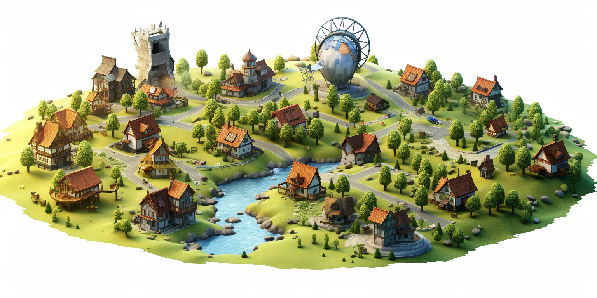

The Regenerative City Simulator: A Blueprint for Future Communities
In the quest for sustainability and regeneration, the idea of modeling our societies offers a fascinating glimpse into the future. But can we go beyond mere theories and hypotheticals to create a working simulation of a regenerative society? That's the question driving the concept of the regenerative city simulator.
Imagine a virtual environment where we can mimic a thriving, regenerative community. Picture a settlement of about 500 to 1,000 homes, perhaps even more, where every input and output is carefully modeled and analyzed. This isn't just a game or a theoretical experiment; it's a tool to help us understand how to build real, sustainable societies.
A Living Model
The regenerative city simulator would act as a living, breathing model of a community, complete with all the complexity and interconnectedness that entails. From the flow of resources to the social dynamics, every aspect of life would be represented.
- Resource Flow: How do resources move through the community? How are they used, recycled, and regenerated?
- Economic Structure: What economic models would best support the community's goals for sustainability and growth?
- Social Dynamics: How would people interact within this community? What social structures and cultural norms would arise?
- Technological Innovations: What role would technology play in supporting a regenerative lifestyle? What innovations might be necessary or beneficial?
- Environmental Impact: How would this community interact with the natural world around it? How would it minimize negative impacts and maximize positive contributions?
The Potential Impact
The potential benefits of a regenerative city simulator are immense. By providing a virtual playground to experiment, innovate, and learn, we can uncover insights that would be challenging or impossible to gain in the real world.
Imagine the power of being able to simulate, observe, and analyze the complex dance of human activity, resource flow, and environmental impact within a community. It's akin to having a crystal ball that offers a glimpse into the future of sustainable living, but one that also allows us to interact and experiment.
For policymakers, the regenerative city simulator offers a robust testing ground. It's a place where new regulations, incentives, and initiatives can be tried and observed without real-world risks. The lessons learned can lead to more informed and effective policies, sculpting a future where communities flourish without depleting or harming the planet.
Entrepreneurs and innovators, too, find a fertile field in the simulator. Here, they can explore new business models, technologies, and strategies that align with regenerative principles. The freedom to fail and learn within a virtual environment could lead to groundbreaking real-world solutions that make sustainability not just a goal but a norm.
Educators and students stand to gain immensely from this tool. By transforming abstract concepts into tangible, interactive experiences, the simulator can ignite curiosity, deepen understanding, and inspire a new generation of thinkers and doers committed to regeneration. The simulator could become a valuable asset in schools and universities, creating a hands-on learning experience that bridges the gap between theory and practice.
Even beyond the walls of academia and government, the regenerative city simulator can serve as a public exhibit and awareness tool. Imagine a world where anyone can step into a virtual community, learn about sustainable practices, and even contribute ideas. It's a democratization of knowledge and innovation that could spark a cultural shift towards more mindful living.
The impact of the regenerative city simulator is multifaceted and profound. It's a bridge between today's challenges and tomorrow's solutions, between what we know and what we can discover. It has the potential to reshape our approach to urban planning, environmental stewardship, and community building. In a world striving for balance and sustainability, this simulator might just be the tool we need to tip the scales towards a brighter, more regenerative future.
The ingredients of such a regenerative city:
In envisioning the blueprint of a regenerative city, a vibrant and thriving ecosystem where sustainability is not an afterthought but the core of its design, we must consider several key ingredients that make this city a beacon for future living:
- New Economic System: Drawing inspiration from the "currencies of the future" chapter, the city must embrace an innovative economic framework. This involves creating community-driven currencies that balance fast-moving, daily transactional needs with long-term, stable value-holding. The dynamism and inclusivity of such a system can revolutionize the way people interact, transact, and grow wealth within the community.
- Food Forests and Regenerative Permaculture: Beyond mere sustenance, the approach to food in this city is a canvas of creativity and care for the Earth. Food forests and regenerative permaculture practices can transform the city's landscapes into lush, productive gardens. These not only provide nourishment but also prevent soil erosion, create playful and aesthetic environments, and foster a deeper connection with nature.
- Healthcare Reimagined: The city's healthcare system must be freed from today's extractive and cost-intensive models. The focus should be on a community-driven, cost-effective approach that prioritizes prevention, well-being, and engagement rather than merely prolonging life. Healthcare becomes a collaborative endeavor, with community members playing an active role in shaping practices, thus making it more accessible and resonant with local needs.
- Dynamic Education: Education in the regenerative city is not confined to static curricula or conventional classroom settings. It's a living, evolving, and community-integrated process where the diverse knowledge and experiences within the community are leveraged. This dynamic education system acknowledges that life is ever-changing, and thus, learning must be fluid and adaptive. It allows for variation and creativity, fostering critical thinking, curiosity, and a lifelong love for learning.
The regenerative city is not a utopian dream but a tangible aspiration. By rethinking economics, reconnecting with nature through food, redefining healthcare, and rejuvenating education, we can build a city that doesn't just sustain but thrives. A city that not only meets the needs of its inhabitants but enriches their lives, all while honoring and preserving the delicate balance of our planet. The seeds for such a transformation are already sown in our collective consciousness; the regenerative city simulator might just be the tool to cultivate them into reality.
Result
Such a system of regenerative city planning offers a paradigm shift, redefining how communities function and interact. This innovative approach delivers a system that can be an order of magnitude more cost-effective, or in other words, remarkably efficient with money. It transforms residents into producers for their peers and neighboring cities, facilitating an exchange of goods and services that drives down costs.
In this environment, living a happy life means living a healthier life, filled with higher quality food, less polluted air, and purer water. The sense of community and reputation creates a trusting atmosphere, lessening fears of deception or exploitation. Within this localized network, residents would have access to vast information through an internal internet, global and locally connected, enriching education for children and ensuring active participation of the elderly in society.
This vision isn't solely futuristic; it is rooted in the wisdom of older tribes whose systems have thrived for over a thousand years. Learning from and mimicking such functionality infuses the city with time-tested principles. The most crucial aspect is that this city must be co-created, not dictated by a few but crafted through collaborative effort using open-source technology. Starting with a simulated model allows everyone to plug in and contribute.
Imagine a city where the residents define and even build their homes in harmony with nature. Using organic materials like bamboo and hempcrete, they could construct multi-story buildings completely in line with nature, minimizing the use of concrete and synthetics. This doesn't mean a return to primitive ways but an embrace of what nature offers in a contemporary context.
This city wouldn't just be a place to live; it would be a living, evolving entity that represents the best of what humanity can achieve when guided by respect for the planet, one another, and the wisdom of those who came before. The shared vision and hands-on participation of its inhabitants would make it a tangible reality, organically woven into the fabric of the Earth, a true manifestation of people and planet first.
Co-Creation
The creation of a regenerative city is not merely an aspiration; it is a collaborative mission that demands the active participation and labor of the people who will call it home.
In this innovative urban model, the inhabitants themselves are not just stakeholders; they are the designers, builders, and caretakers. Through a constant feedback loop, countless voices come together to share insights and desires, shaping a city that truly reflects the community's needs.
This is not about mere consultation; it's about hands-on involvement, where the residents do much of the work themselves, employing existing technologies and methods that make such a city not just feasible but truly regenerative.
This means more than sustaining what exists; it is about enriching and nourishing, giving more to the land and community than is taken. A city built on these principles stands as a living testament to what can be achieved when the priorities are the planet and the people, where the very act of creation strengthens and revitalizes both the human and natural world.
Conclusion
The fear that creating a new type of city means giving up the comforts of modern life is misplaced. What we believe in is a balance, where we can blend current technologies with principles like teamwork, honesty, real democracy, and a form of capitalism that truly works for everyone. Today's system often feels like a choice between seeking personal wealth at the cost of our values or falling victim to a large, impersonal machine. But there's another way.
Imagine a city built by the people who live there, using available resources and guided by a shared plan. Think of a place where everyone can live without fear, in good health, and with all they need. This isn't a far-off fantasy; it's something we can actually achieve. By working together, drawing on the best of what we have today, and focusing on common goals, we can create a bright future.
All that's needed is the will to get started. We need to gather people, make plans, and find the funds. We have the tools and the desire; now we just need to take the next step. It's an exciting prospect, and one that could change the way we think about where we live and how we live. A community-built city is not just a nice idea for the future; it could be our reality. And it's a reality where everyone wins.